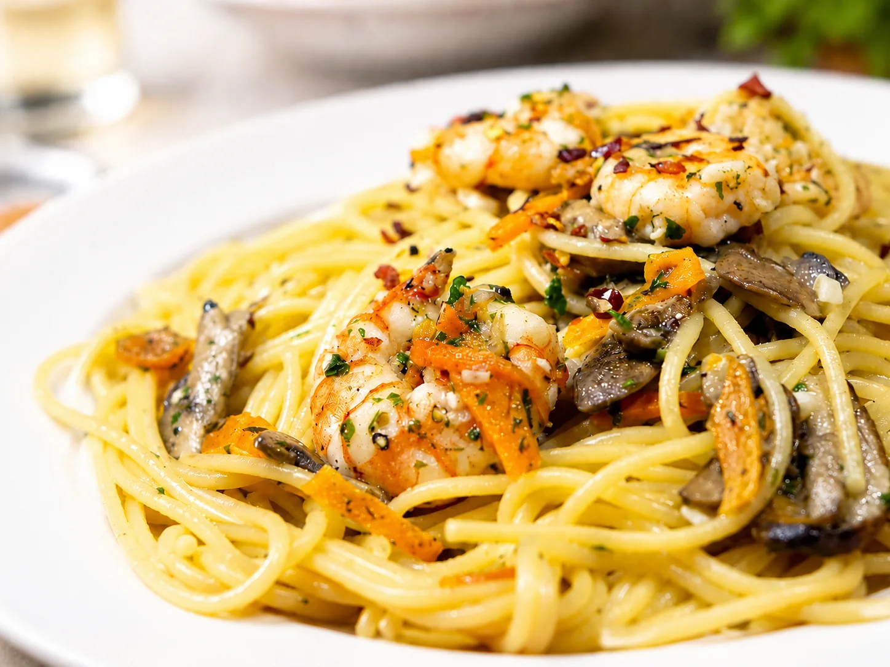

Où manger à Alghero : restaurants conseillés par Venerdì House
Restaurants, adresses traditionnelles et lieux pratiques sélectionnés par Venerdì House pour organiser dîners, repas rapides et soirées spéciales pendant votre séjour.
Si vous cherchez un restaurant à Alghero, ce guide réunit quelques adresses utiles à envisager pendant votre séjour. Ce n’est ni un classement absolu ni une liste sponsorisée : c’est une sélection pratique pensée pour les hôtes de Venerdì House, afin de vous aider à choisir entre cuisine de la mer, plats locaux et options plus détendues.
La cuisine d’Alghero est liée à la mer, à la tradition sarde et à l’âme catalane de la ville. Il peut donc être intéressant d’alterner une soirée dans le centre historique, un restaurant sur le front de mer ou à proximité, et une adresse plus simple pour déjeuner après la plage.
Au moment de choisir où manger, mieux vaut aller au-delà du menu affiché dehors et des classements génériques. L’important est de comprendre quelle cuisine le restaurant propose vraiment, quelle atmosphère il offre et s’il correspond à la soirée que vous avez en tête. Un beau cadre ou une jolie vue ne suffisent pas si l’assiette n’est pas à la hauteur.
Les horaires, jours de fermeture, fourchettes de prix et ouvertures saisonnières peuvent changer : avant d’y aller, surtout en haute saison, il est toujours préférable de vérifier et de réserver.

Restaurants conseillés par Venerdì House
L’ordre des restaurants n’est pas un classement. Les adresses sont présentées comme des pistes pratiques à évaluer selon le quartier, le type de cuisine et la soirée que vous souhaitez organiser.
-
Ristorante Enhorabona
Pratique si vous souhaitez rester dans le quartier du Lido sans vous déplacer vers le centre historique. Une bonne option pour un dîner détendu après une journée à la plage ou pour une soirée simple près de la mer.
Voir sur Google Maps -
Ristorante Mabrouk
L’un des noms les plus connus en ville pour un dîner de poisson à l’esprit traditionnel. Avant de vous organiser, il vaut mieux vérifier la formule actuelle, les disponibilités et les modalités de réservation.
Voir sur Google Maps -
Trattoria Lo Romani - Da Vittoria e Gigi
Ici, l’accent est mis sur la cuisine du territoire dans un cadre simple et caractéristique. C’est une adresse intéressante si vous souhaitez alterner le poisson avec des saveurs sardes plus traditionnelles.
Voir sur Google Maps -
Sa Mandra
Par rapport aux restaurants du centre, Sa Mandra propose une expérience plus liée à la cuisine sarde de l’intérieur des terres. L’adresse demande un déplacement hors d’Alghero, donc il vaut mieux l’organiser à l’avance.
Voir sur Google Maps -
La Piccola Cucina
Une bonne option si vous cherchez des plats soignés dans une zone centrale, avec une atmosphère adaptée à un dîner tranquille. C’est un bon choix lorsque vous voulez quelque chose d’agréable sans trop vous éloigner des parcours habituels du centre.
Voir sur Google Maps -
Lo Chalet Ristorante Wine & Bar
Une adresse utile pour une soirée près du secteur de la plage, avec une formule plus vivante qu’un restaurant classique. Elle convient si vous cherchez un lieu détendu, une ambiance de bar à vin, des cocktails et un rythme plus libre.
Voir sur Google Maps -
La Saletta
Un cadre plus intime, adapté à un dîner calme et à un rythme plus posé. L’adresse peut plaire aux couples ou à ceux qui recherchent une soirée plus soignée.
Voir sur Google Maps -
Ristorante Da Musciora Danilo Delrio
Si vous souhaitez un dîner plus élégant ou une soirée particulière, c’est l’une des adresses à considérer avec attention. Ce n’est pas un restaurant à choisir au hasard au dernier moment : il vaut mieux réserver et s’organiser.
Voir sur Google Maps -
Il Refettorio
Dans le centre historique, Il Refettorio propose une cuisine soignée et une position idéale pour une soirée entre les ruelles d’Alghero. L’adresse se combine bien avec une promenade dans le cœur de la ville, avant ou après le dîner.
Voir sur Google Maps -
Il Pavone
Historique et reconnaissable, Il Pavone est lié à la cuisine de la mer et à la tradition locale. Il convient davantage à un dîner classique dans le centre d’Alghero qu’à un repas rapide et sans préparation.
Voir sur Google Maps
Où séjourner pour profiter d’Alghero facilement
Séjourner dans un quartier pratique rend aussi les soirées plus simples à organiser. Venerdì House se trouve à environ 100 mètres de la plage du Lido San Giovanni, près de bars, restaurants et services utiles, et permet de rejoindre facilement la mer comme le centre historique.
Pour compléter l’organisation de votre séjour, vous pouvez aussi lire notre guide des plages d’Alghero et notre guide sur que voir à Alghero.
FAQ - Où manger à Alghero
Où manger à Alghero pour goûter une cuisine locale ?
Pour des saveurs plus proches du territoire, Trattoria Lo Romani et Sa Mandra peuvent être de bonnes pistes. Pour un dîner de poisson plus classique, Mabrouk et Il Pavone font partie des adresses à considérer.
Quand faut-il réserver un restaurant à Alghero ?
Il est préférable de réserver en haute saison, le week-end et lorsque vous avez un restaurant précis en tête. Pour les adresses les plus demandées, mieux vaut s’y prendre quelques jours à l’avance.
Faut-il toujours manger dans le centre historique ?
Pas forcément. Le centre historique est très agréable pour une soirée, mais le front de mer et le quartier du Lido sont souvent plus pratiques si vous voulez rester près de Venerdì House ou éviter de longs déplacements.
Quels restaurants conviennent davantage aux familles ?
Pour une soirée plus simple, Enhorabona ou Lo Chalet peuvent être de bonnes options. Avec des enfants, il est toujours préférable de vérifier le menu, les horaires et les disponibilités avant de réserver.
Où manger du poisson à Alghero ?
Mabrouk, Il Pavone, Enhorabona, La Saletta et Da Musciora font partie des restaurants à envisager si vous cherchez du poisson ou une cuisine plus tournée vers la mer.
Y a-t-il des restaurants proches de Venerdì House ?
Oui. Dans le quartier du Lido et le long du front de mer, plusieurs adresses sont faciles à rejoindre. Le centre historique est également accessible par une marche plus longue, en bus ou avec un court déplacement.
Où manger rapidement à Alghero ?
Pour un déjeuner simple ou une pause sans contrainte, vous pouvez chercher des adresses rapides, des sandwichs, de la focaccia et des lieux décontractés près du port ou du centre.
Découvrir Alghero

Les plages d’Alghero
Découvrez les plus belles plages d’Alghero et choisissez où profiter de la mer pendant votre séjour.
En savoir plus
Que voir à Alghero
Un guide pratique entre centre historique, musées, archéologie et nature, même pour 1 ou 2 jours.
En savoir plus
Galerie de Venerdì House
Découvrez les pièces, les chambres et les détails de l’appartement dans la galerie photo.
En savoir plus
IRONMAN 70.3 Alghero 2027
Date, parcours et conseils pratiques pour les athlètes et accompagnateurs qui préparent un séjour à Alghero.
En savoir plus